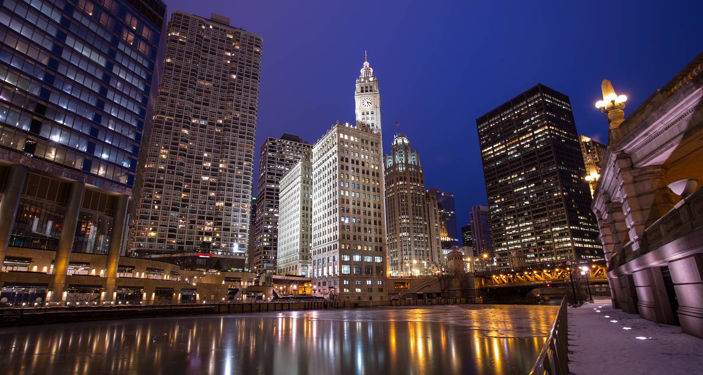
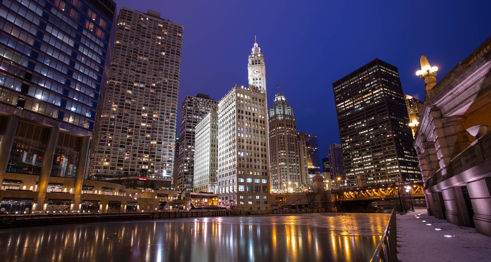

February 24th - Chicago By Train1/100, f/16, ISO100
I have been taking a series of photos during my morning commute into the city from the train, and this weeks entry is my favorite from the past few days. While very similar to Week 1, this time I decided to slow my shutter speed down to introduce some motion blur in the foreground while keeping the subject and background sharp. After pulling the photo into Lightroom it looks like I panned from left to right to keep the water tower in frame, dragging the exposure a bit - the consequence of this is that the water tower is sharp, the foreground is extremely blurred, and the background is just barely blurred. This panning technique is used by photographers to keep very fast moving subjects in focus while blurring out the background, emphasizing motion.
I love to take photos nobody else has or would, which means putting myself through some uncomfortable situations at times. When another 5-8 inches of snow was forecast I saw a great opportunity to capture something unique while most sane people were bundled up at home. Leaving work and heading down to Millenium Park I got blasted in the face with snow no matter which direction I walked making me almost throw in the towel a few times. Since I don't have a weather cover I had to keep my camera tucked up underneath my coat while not shooting to keep the camera relatively dry and the lens clear. I quickly pulled the camera out when I found these two people were the only ones having fun underneath the sculpture, snapping this exposure as the woman reached out to touch it. I really love the sense of scale - the silhouette effect really adds to the sense of how large the sculpture really is.
February 9th - Juvenile Bald Eagle1/2000, f/6, ISO2000
My trek in week 6 was spent along the frozen banks of the Fox River in Montgomery, IL. Bald Eagles have made a reappearance along the Fox in recent years, coming to town in January and February feeding along the exposed areas of the river. Although we were close, shooting with the Canon 100-400mm lens was tough. I could have easily used another 200mm to get in tighter. During the morning the adult eagles were few and far between although flew overhead a few times, it was mostly the juveniles out feeding.


 
